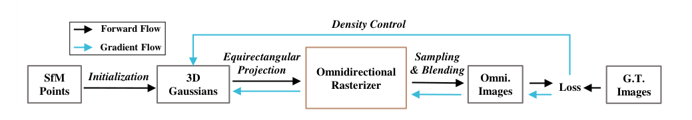
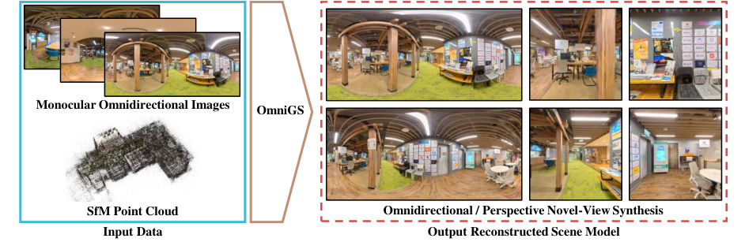
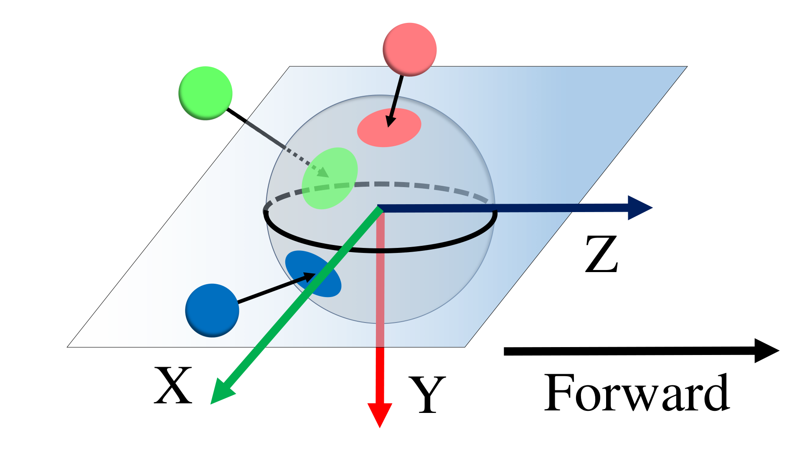
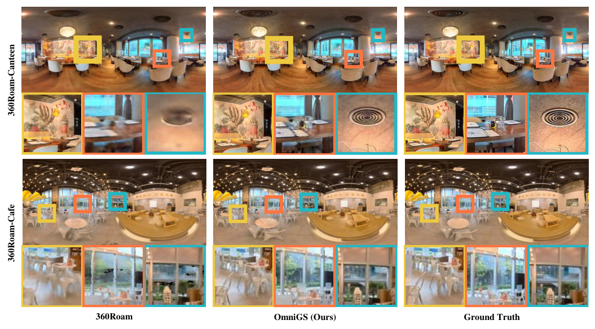
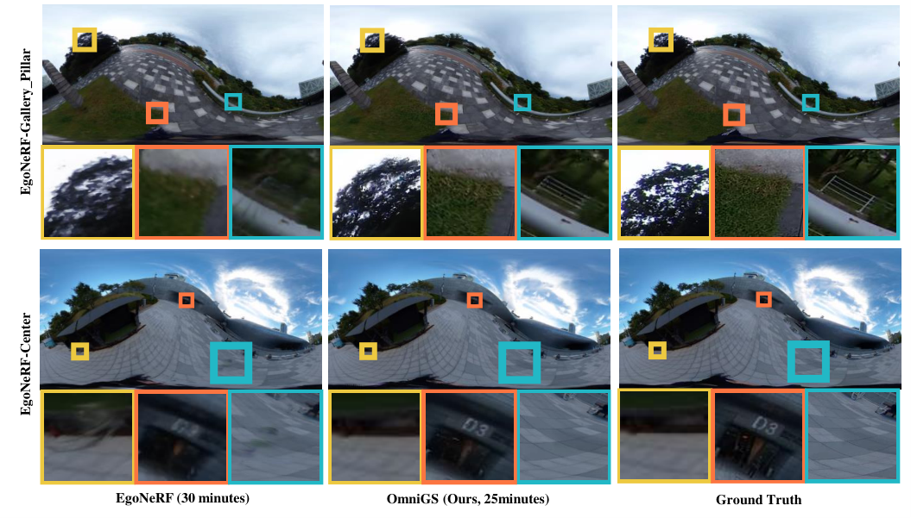
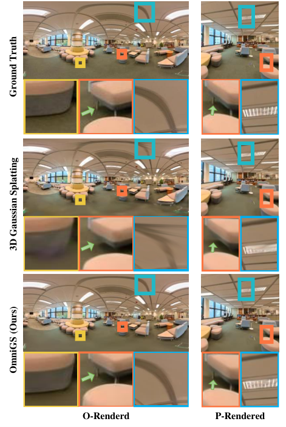

OmniGS
简单摘要
在本文中，我们的目标是提出一种新的系统来驯服 3D 高斯分布，以实现快速全向辐射场重建。为了验证我们提出的系统的有效性，我们对 360Roam 的全向漫游场景和 EgoNeRF 的自我中心场景进行了广泛的评估。


在本文中，我们的目标是提出一种新的系统来驯服 3D 高斯分布，以实现快速全向辐射场重建。为了验证我们提出的系统的有效性，我们对omnidi进行了广泛的评估。
核心创新
论文真正新增的设计，首先体现在 在本文中，我们提出了 OmniGS，一种新型的全向高斯喷射系统，可利用全向图像进行快速辐射场重建。这一步不是换个说法重复问题定义，而是直接改动了方法主线的切入点。
进一步看，我们介绍 OmniGS，一种新颖的全向辐射场重建方法。作者这样安排，是为了让前面的表示、约束或训练信号继续影响后面的求解链路。
进一步看，它以一系列校准的单目 360 度图像和稀疏的 SfM 点云作为输入，快速恢复 3D 高斯作为大规模场景表示，实现实时全向新颖的视图合成。作者这样安排，是为了让前面的表示、约束或训练信号继续影响后面的求解链路。
进一步看，最近，3D高斯分布（3DGS）[11]通过引入3D高斯来明确表示辐射场，有效解决了NeRF的局限性。作者这样安排，是为了让前面的表示、约束或训练信号继续影响后面的求解链路。
技术细节
围绕 技术总览，为了从某个视图渲染图像，所有点及其协方差都被投影、采样并混合到 2D 屏幕空间上。这种前向渲染过程是可微分的，允许从姿态校准图像和稀疏点云进行场景重建和优化。为了利用单次全向图像，我们使用等距柱状投影模型，这是全向重建中最常用的形式。作者这样设计，是为了把这一节的输入、约束和输出关系讲清楚。
近似可以大大加速前向过程，从而实现高 FPS 实时渲染。总的来说，在基于图块的前向渲染过程中，整个等距柱状图像被分割成由相同大小的图块组成的网格。第三，同一图块内的所有像素同时渲染，每个像素分配给一个线程。这一步的作用，是把当前结果继续传给后面的模块或训练目标。
3 全向高斯泼溅
围绕 3 全向高斯泼溅，为了从某个视图渲染图像，所有点及其协方差都被投影、采样并混合到 2D 屏幕空间上。这种前向渲染过程是可微分的，允许从姿态校准图像和稀疏点云进行场景重建和优化。为了利用单次全向图像，我们使用等距柱状投影模型，这是全向重建中最常用的形式。作者这样设计，是为了把这一节的输入、约束和输出关系讲清楚。
近似可以大大加速前向过程，从而实现高 FPS 实时渲染。总的来说，在基于图块的前向渲染过程中，整个等距柱状图像被分割成由相同大小的图块组成的网格。（停止阈值并不完全是出于数值稳定性考虑。） 向后优化 为了优化 3D 高斯的世界位置、颜色、旋转、比例和不透明度。这一步的作用，是把当前结果继续传给后面的模块或训练目标。
3.1 初步的
围绕 3.1 初步的，3D 高斯泼溅是一种各向异性的基于点的场景表示。为了从某个视图渲染图像，所有点及其协方差都被投影、采样并混合到 2D 屏幕空间上。这种前向渲染过程是可微分的，允许从姿态校准图像和稀疏点云进行场景重建和优化。作者这样设计，是为了把这一节的输入、约束和输出关系讲清楚。
3.2 相机型号
围绕 3.2 相机型号，这一节先处理的是 相机模型是 3D 相机空间点与其在图像上的投影位置之间的数学关系。作者这样设计，是为了先把输入表示、约束条件或中间状态整理成后续模块能直接使用的形式。
接着，论文还会处理 为了利用单次全向图像，我们使用等距柱状投影模型，这是全向重建中最常用的形式。它的作用不是重复上一层计算，而是把这一阶段得到的结果继续传给后面的更新、渲染或决策步骤。
接着，论文还会处理 如图所示，我们根据SLAM约定定义相机坐标系。它的作用不是重复上一层计算，而是把这一阶段得到的结果继续传给后面的更新、渲染或决策步骤。

$$ \mathbf{t} = \mathbf{T}_\text{cw}*\mathbf{m} = \mathbf{W}\mathbf{m}+\mathbf{t}_\text{cw}. $$
这条式子是在把高斯的协方差从原始三维坐标系变换到相机或成像平面相关的坐标系中。这样后续光栅化时，模型才能正确知道每个高斯在当前视角下会拉伸成怎样的椭圆分布。
$$ \begin{bmatrix} p_x\\ p_y \end{bmatrix} = \begin{bmatrix} f_x t_x/t_z + c_x\\ f_y t_y/t_z + c_y \end{bmatrix}, $$
这条式子是在做标准相机投影：把三维点在当前相机坐标系下的位置，按照焦距和主点参数映射到二维像素平面。它对应的是高斯中心如何落到图像上的位置计算。
$$ \begin{bmatrix} lon\\ lat \end{bmatrix} = \begin{bmatrix} \mathrm{arctan2}(t_x / t_z)\\ \arcsin (t_y / t_r) \end{bmatrix}, $$
这条式子把相机坐标系下的三维方向转换成经纬度表示。对于全景或全向成像来说，这一步是在把普通三维方向改写成球面坐标，方便后续映射到全景图域。
$$ \begin{bmatrix} s_x\\ s_y \end{bmatrix} = \begin{bmatrix} lon / \pi\\ 2lat / \pi \end{bmatrix}, $$
这条式子把经纬度进一步归一化到标准化平面坐标。它的作用是把球面方向变成后续采样、投影或光栅化可以直接使用的二维坐标。
$$ \begin{bmatrix} p_x\\ p_y \end{bmatrix} = \begin{bmatrix} (s_x + 1) W / 2\\ (s_y + 1) H / 2 \end{bmatrix}, $$
这条式子把归一化平面坐标再换算成实际图像分辨率下的像素位置。这样模型就能把前面得到的全景坐标准确落到具体的图像网格上。
3.3 前向渲染
近似可以大大加速前向过程，从而实现高 FPS 实时渲染。总的来说，在基于图块的前向渲染过程中，整个等距柱状图像被分割成由相同大小的图块组成的网格。第三，同一图块内的所有像素同时渲染，每个像素分配给一个线程。作者这样设计，是为了把这一节的输入、约束和输出关系讲清楚。
$$ C=\sum_{i=1}^N c_i \alpha_i \prod_{j=1}^{i-1}(1-\alpha_j), $$
放在“全向高斯泼溅”这一部分看，它重点在定义或约束 C 这一项。这条式子描述了多个分量的聚合或逐步合成过程。它通常表示模型如何把局部贡献、概率权重或多项损失累积成最终结果。
$$ \alpha_i = o_i G_i(\Delta \mathbf{p}_i), $$
这条式子定义了单个高斯在当前像素上的有效透明度：基础不透明度会再乘上该高斯在该像素位置的空间响应。这样模型既考虑了材质强度，也考虑了像素与高斯中心的相对距离。
$$ G_i(\Delta \mathbf{p}_i) = \exp({-\frac{1}{2} (\Delta \mathbf{p}_i)^\text{T} \Tilde{\mathbf{\Sigma}}^{-1}_i (\Delta \mathbf{p}_i)}). $$
这条式子给出了屏幕空间高斯核的具体形式：像素离投影中心越远，响应就按高斯分布快速衰减。它决定了每个高斯在二维图像上影响多大范围、以什么权重参与渲染。
$$ \Tilde{\mathbf{\Sigma}} \approx \mathbf{J} \mathbf{W} \mathbf{\Sigma} \mathbf{W}^\text{T} \mathbf{J}^\text{T}, $$
这条式子是在把高斯的协方差从原始三维坐标系变换到相机或成像平面相关的坐标系中。这样后续光栅化时，模型才能正确知道每个高斯在当前视角下会拉伸成怎样的椭圆分布。
$$ \mathbf{J} = \begin{bmatrix} \dfrac{\partial p_x}{\partial t_x} & \dfrac{\partial p_x}{\partial t_y} & \dfrac{\partial p_x}{\partial t_z} \\[16pt] \dfrac{\partial p_y}{\partial t_x} & \dfrac{\partial p_y}{\partial t_y} & \dfrac{\partial p_y}{\partial t_y} \\[16pt] 0 & 0 & 0 \end{bmatrix} , $$
放在“全向高斯泼溅”这一部分看，它重点在定义或约束 J 这一项。这条式子把若干坐标、状态或参数组织成矩阵/向量形式，用于后续几何变换、投影计算或状态更新。理解时重点看每一项分别代表哪一类量，以及这个矩阵最终服务于哪一步运算。
3.4 向后优化
围绕 3.4 向后优化，这一节先处理的是 为了优化 3D 高斯的世界位置、颜色、旋转、比例和不透明度，我们最小化渲染图像和地面实况之间的光度损失。作者这样设计，是为了先把输入表示、约束条件或中间状态整理成后续模块能直接使用的形式。
接着，论文还会处理 后向梯度通过完整的投影过程从 3D 高斯的属性流动。它的作用不是重复上一层计算，而是把这一阶段得到的结果继续传给后面的更新、渲染或决策步骤。
接着，论文还会处理 具体来说，除了 和 与相机模型无关之外，所有属性的梯度都是我们需要推导和修改的，以进行全方位优化。它的作用不是重复上一层计算，而是把这一阶段得到的结果继续传给后面的更新、渲染或决策步骤。
接着，论文还会处理 我们可以应用多变量函数的链式法则得到。它的作用不是重复上一层计算，而是把这一阶段得到的结果继续传给后面的更新、渲染或决策步骤。
4 重建管道
围绕 4 重建管道，重建从一组 SfM 校准的等距柱状图像开始，每个图像都有一个姿态。对于每次迭代，我们从随机打乱的 中选择一个视图，从 渲染 到 get ，然后计算相应的后向梯度。基于以下策略进行致密化后，我们将优化器前进一步以优化所有 3D 高斯。作者这样设计，是为了把这一节的输入、约束和输出关系讲清楚。
实验结论
我们将我们的重建质量和渲染速度与基线 SOTA 真实感 3D 重建方法 NeRF 、 Mip-NeRF 360 、 360Roam 、 Instant-NGP 、 TensoRF 和 EgoNeRF 进行比较。我们还进行了交叉验证实验，以确认我们的方法与透视 3DGS 相比的有效性。考虑到这一点，我们通过将渲染的测试视图裁剪为透视图像来重新评估 OmniGS 结果，然后比较两个 P 测试结果。
透视 3DGS 因 FoV 利用率有限而遭受细节损失和伪影，而 OmniGS 则渲染正确的全向新颖视图，可以裁剪为更好的透视图像。
| Method | PSNR | SSIM | LPIPS | FPS |
|---|---|---|---|---|
| NeRF | 22.443 | 0.672 | 0.339 | <1 |
| Mip-NeRF 360 | 24.579 | 0.748 | 0.269 | <1 |
| TensoRF | 15.035 | 0.531 | 0.676 | <1 |
| Instant-NGP | 17.018 | 0.548 | 0.532 | 4 |
| 360Roam | 25.061 | 0.760 | 0.202 | 30 |
| Ours | 25.464 | 0.806 | 0.141 | 121 |

5.1 实施和实验设置
我们基于LibTorch框架完成了OmniGS，LibTorch框架是PyTorch的C++版本。我们根据 PSNR、SSIM、LPIPS 和渲染 FPS（前向传递推理速度）评估结果，这些是真实感重建的常用标准。除 EgoNeRF 外，其他基线均根据其原始目标，根据视角小说观点综合进行评估。

| Dataset | EgoNeRF-OmniBlender | EgoNeRF-Ricoh360 | ||||||||||
|---|---|---|---|---|---|---|---|---|---|---|---|---|
| Indoor | Outdoor | |||||||||||
| Method | PSNR | SSIM | LPIPS | FPS | PSNR | SSIM | LPIPS | FPS | PSNR | SSIM | LPIPS | FPS |
| NeRF | 27.660 | 0.756 | 0.425 | <1 | 23.630 | 0.686 | 0.458 | <1 | 22.780 | 0.663 | 0.538 | <1 |
| Mip-NeRF 360 | 27.410 | 0.763 | 0.412 | <1 | 25.570 | 0.769 | 0.306 | <1 | 24.280 | 0.725 | 0.384 | <1 |
| TensoRF | 29.250 | 0.791 | 0.376 | 2 | 25.680 | 0.734 | 0.344 | 2 | 25.160 | 0.732 | 0.376 | 2 |
| EgoNeRF | 30.230 | 0.840 | 0.248 | 2 | 28.810 | 0.868 | 0.136 | 2 | 24.710 | 0.746 | 0.314 | 2 |
| Ours | 35.330 | 0.917 | 0.072 | 115 | 32.670 | 0.919 | 0.044 | 116 | 26.032 | 0.825 | 0.128 | 91 |
5.2 在 360Roam 数据集上
360Roam 数据集包含 10 个复杂的现实世界室内场景，由固定在移动机器人上的商用全向相机捕获。我们在 中展示了定性比较示例，并在 中报告了定量评估结果。借助我们基于显式几何表示的后向优化，OmniGS 的性能优于基于 NeRF 的基线。
5.3 在 EgoNeRF 数据集上
EgoNeRF提供11个OmniBlender模拟场景和11个Ricoh360真实世界场景。显示了一些全向渲染的定性比较示例，说明了 OmniGS 重建更清晰、更锐利的细节的能力。

5.4 附加透视渲染评估
这是因为当以等距柱状图像的形式评估场景模型时，真实全向相机的近极畸变会恶化定量结果。考虑到这一点，我们通过将渲染的测试视图裁剪为透视图像来重新评估 OmniGS 结果，然后比较两个 P 测试结果。此外，我们使用全向光栅器渲染了 3DGS 训练的模型，然后比较了两个 O 测试结果。
理解评价
如果把这篇论文放回问题背景里看，它真正的价值在于：然而，当前的 3D 高斯溅射系统仅支持使用未失真透视图像的辐射场重建。这说明作者不是只补一个局部模块，而是在重新组织问题该怎样被解决。
最能支撑这个判断的，还是实验给出的证据：在本文中，我们提出了 OmniGS，一种新型的全向高斯喷射系统，可利用全向图像进行快速辐射场重建。换句话说，这些设计并不只是概念上更完整，而是实实在在改变了最终结果。
当然，它离真正成熟的方案还有距离：当前方案的主要局限在于它仍然受到计算资源、输入质量或场景复杂度的约束，离真正大规模稳定部署还有距离。后续更值得继续推进的方向，是 未来继续提升效率、泛化能力以及在更复杂场景下的稳定性。